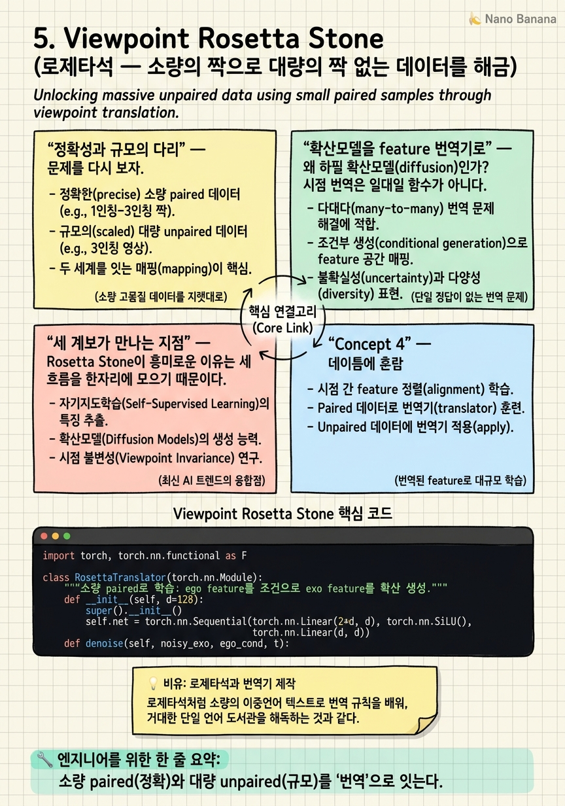

Viewpoint Rosetta Stone
고대 이집트 상형문자는 그리스어가 나란히 새겨진 돌 하나로 해독됐다. 두 시점의 영상도, 작은 '번역 돌' 하나로 대량의 미지를 풀 수 있다면?

🎯 학습 목표
- paired의 정확성과 unpaired의 규모라는 상충을 잇는 발상을 이해한다
- 확산모델을 feature 공간 번역기로 쓰는 원리를 안다
- 합성 feature 증강이 unpaired 정렬을 돕는 구조를 설명한다
- 생성(4단계)과 표현학습(2단계)을 잇는 이 논문의 위치를 파악한다
- feature 공간 번역과 픽셀 번역의 차이를 구분한다
3·4장은 unpaired 정렬을 밀어붙였지만, 조용한 대가가 있다. 짝이 없으니 "이 ego가 저 exo에 대응한다"는 정확한 감독이 없어, 정렬이 간접적·근사적이다. 반대로 1·2장의 paired는 정확하지만 규모가 작다. 정확성(paired) vs 규모(unpaired) — 익숙한 상충이다.
Viewpoint Rosetta Stone(CVPR 2025 Oral, 프로젝트 페이지)은 이 둘을 잇는 다리를 놓는다. 발상은 이름 그대로다. 고대 로제타석이 그리스어라는 아는 언어로 상형문자라는 모르는 언어를 풀었듯, 소량의 동기화 paired 영상을 '번역 돌'로 삼아 대량의 unpaired를 해금한다.
메커니즘의 핵심은 확산 기반 번역기(Rosetta Stone Translator, RST)다. 소량 paired로 RST를 학습시켜 "ego feature → exo feature" 번역을 배우게 한다. 그다음 unpaired ego 영상에 RST를 적용해 합성 exo feature를 만들고, 이 합성 짝으로 dual encoder를 대조 학습한다. paired의 정확성을 RST에 응축하고, 그것으로 unpaired의 규모를 정렬 가능하게 바꾼다. 표현학습(2단계)과 생성(4단계)의 아이디어가 여기서 처음 만난다.
핵심 내용
정확성과 규모의 다리
문제를 다시 보자. paired 데이터는 "이 ego 순간 = 이 exo 순간"이라는 정확한 대응을 준다. 하지만 만들기 비싸 규모가 작다. unpaired는 규모는 크지만 대응이 없어 정렬이 간접적이다.
Rosetta Stone의 전략은 정확성을 압축해 규모에 이식하는 것이다. 소량 paired로 두 시점의 대응 규칙을 학습한 번역기를 만들면, 그 번역기는 paired의 정확성을 담은 함수가 된다. 이제 이 번역기를 unpaired ego에 적용하면, 대응 짝을 합성할 수 있다.
\[\text{RST}: \; f_{ego} \;\longmapsto\; \hat{f}_{exo}\]
즉 unpaired ego 영상 하나하나가, RST를 거쳐 '가상의 exo 짝'을 얻는다. 이렇게 만든 합성 paired로 정렬을 학습하니, 규모(unpaired)와 정확성(RST에 응축된 paired)을 동시에 취한다.
확산모델을 feature 번역기로
왜 하필 확산모델(diffusion)인가? 시점 번역은 일대일 함수가 아니다. 하나의 ego 상태에 대응하는 exo는 여러 가능성이 있다(exo 카메라 위치·각도에 따라). 이런 다중 모드(multi-modal) 대응을 결정론적 회귀로 학습하면 평균으로 뭉개진다.
확산모델은 이 다중성을 자연스럽게 표현한다. RST는 ego feature를 조건으로 받아, 노이즈에서 시작해 점진적 디노이징으로 그럴듯한 exo feature를 생성한다. 조건부 생성이라 하나의 ego에서 분포로서의 exo를 만들 수 있다.
주목할 점은 이 번역이 픽셀이 아니라 feature 공간에서 일어난다는 것이다. 사실적인 exo 영상을 그리는 게 목적이 아니라, 정렬 학습에 쓸 exo 표현을 만드는 게 목적이다. 그래서 무겁게 픽셀을 렌더링하지 않고 feature를 번역한다 — 9장 Exo2Ego가 픽셀을 생성하는 것과 대비되는 선택이다. 이 'feature 공간 확산 번역'이 표현학습과 생성 사이의 절묘한 중간 지대다.
세 계보가 만나는 지점
Rosetta Stone이 흥미로운 이유는 세 흐름을 한자리에 모으기 때문이다.
-
1·2장(paired 감독): 소량 paired로 RST를 학습 — paired의 정확성을 계승.
-
3·4장(unpaired 규모): 합성 짝으로 대량 unpaired를 정렬 — unpaired의 규모를 계승.
-
9장(생성): 확산 번역기라는 생성 도구 — 생성 계열의 씨앗.
이 융합이 이 논문을 표현 정렬 계열의 마지막 확장이자 생성 계열의 선구로 만든다. paired vs unpaired 상충을 '번역'으로 해소한 발상은 데이터가 귀한 모든 멀티뷰 문제에 일반화된다.
한계도 정직하다. RST를 학습하려면 여전히 어느 정도의 동기화 paired가 필요하다 — 로제타석 자체는 있어야 한다. 또한 번역이 feature 공간에 머물러, 픽셀 수준의 사실적 시점 변환이나 객체 대응은 주지 않는다. 그럼에도 이 논문은 표현 정렬 계열이 도달한 정점이며, 여기서 무대는 완전히 바뀐다 — 6장부터는 '표현'이 아니라 '객체'를, 'feature 유사도'가 아니라 '픽셀 대응'을 다룬다.
💡 비유로 이해하기
이집트 상형문자는 200년간 아무도 못 읽었다. 로제타석 — 같은 내용이 그리스어·상형문자·민중문자로 나란히 새겨진 돌 — 하나가 나오자, 아는 그리스어를 지렛대로 모르는 상형문자가 풀렸다.
Rosetta Stone 논문의 소량 paired 영상이 바로 이 돌이다. 그 자체로는 작지만, 그것으로 번역기(RST)를 만들 수 있다. 번역기가 생기면, 이제 그리스어 문헌(unpaired ego) 수만 권을 상형문자(exo)로 번역해 대량의 대역 텍스트를 얻는다.
확산모델을 쓰는 이유는, 이 번역이 일대일이 아니기 때문이다. 한 그리스어 문장이 문맥에 따라 여러 상형문자 표현을 가질 수 있듯, 한 ego 상태는 여러 exo로 대응한다. 확산은 '하나의 정답'이 아니라 '그럴듯한 후보들의 분포'를 만들어 이 다의성을 담는다. 단, 이 번역은 '뜻'(feature) 수준이다 — 아름다운 필사본(픽셀)을 그리는 건 9장의 몫이다.
💻 코드 예시
RST의 발상 — 소량 paired로 학습한 확산 번역기로 unpaired ego에서 합성 exo feature를 만들어 정렬 — 을 개념 골격으로 보자.
import torch, torch.nn.functional as F
class RosettaTranslator(torch.nn.Module):
"""소량 paired로 학습: ego feature를 조건으로 exo feature를 확산 생성."""
def __init__(self, d=128):
super().__init__()
self.net = torch.nn.Sequential(torch.nn.Linear(2*d, d), torch.nn.SiLU(), torch.nn.Linear(d, d))
def denoise(self, noisy_exo, ego_cond, t):
return self.net(torch.cat([noisy_exo, ego_cond], -1)) # 조건부 디노이징
@torch.no_grad()
def translate(self, ego_feat, steps=10):
x = torch.randn_like(ego_feat)
for t in reversed(range(steps)):
x = x - 0.1*self.denoise(x, ego_feat, t) # 간이 역확산
return x # 합성 exo feature
def align_with_synthetic(ego_unpaired, rst):
exo_syn = rst.translate(ego_unpaired) # unpaired ego → 합성 exo 짝
a = F.normalize(ego_unpaired, -1); p = F.normalize(exo_syn, -1)
return (1 - (a*p).sum(-1)).mean() # 합성 짝으로 정렬 학습RosettaTranslator는 소량 paired로 학습돼 ego feature를 조건으로 exo feature를 확산 생성한다(translate). 결정론적 회귀가 아니라 노이즈에서 디노이징하는 이유는 한 ego→여러 exo의 다중성을 담기 위함이다. align_with_synthetic이 핵심 — unpaired ego에 RST를 적용해 합성 exo 짝을 만들고, 그 짝으로 정렬을 학습한다. paired의 정확성이 RST에 응축돼 unpaired 규모로 퍼진다. 모든 게 feature 공간(픽셀 아님)에서 일어난다.
🏭 현업에서의 평가
✅ 시니어가 보는 것
- paired vs unpaired 상충을 '번역기 응축'으로 잇는 발상을 이해하는가
- 확산을 다중모드 대응 번역에 쓰는 이유를 설명하는가
- feature 공간 번역과 픽셀 번역의 목적 차이를 구분하는가
⚠️ 레드 플래그
- 합성 데이터를 그냥 'GAN처럼 가짜'로 폄하하고 정렬 활용 가치를 못 봄
- 시점 번역을 일대일 회귀로 두고 다중성을 무시
- 이 논문이 unpaired를 완전 탈피했다고 오해(로제타석은 여전히 필요)
🎤 예상 인터뷰 질문 (클릭하면 모범답안)
소량 paired만으로 어떻게 대량 unpaired를 정렬 재료로 바꾸는가?
소량 paired로 확산 번역기(RST)를 학습해 'ego feature→exo feature' 대응 규칙을 응축한다. 그다음 unpaired ego에 RST를 적용해 합성 exo 짝을 만들면, 대응 없던 unpaired가 (합성) paired가 된다. paired의 정확성을 함수로 압축해 unpaired 규모에 전파하는 것.
왜 결정론적 회귀가 아니라 확산으로 번역하는가?
시점 번역은 일대다다 — 한 ego 상태에 exo 카메라 위치·각도에 따라 여러 대응이 있다. 결정론적 회귀는 이 다중 모드를 평균으로 뭉개 흐릿해진다. 확산은 조건부 분포에서 샘플링해 다중성을 담아 그럴듯한 exo 후보들을 생성한다.
이 번역이 feature 공간인 것이 왜 중요한가? 9장 Exo2Ego와 어떻게 다른가?
목적이 '정렬 학습용 exo 표현' 생성이지 '사실적 exo 영상' 렌더링이 아니라서 무거운 픽셀 생성 대신 feature를 번역한다. 9장 Exo2Ego는 반대로 픽셀 수준의 사실적 ego 영상을 생성한다 — 같은 '번역' 발상의 표현판 vs 픽셀판.
✨ 핵심 요약
정확성↔규모의 다리
소량 paired(정확)와 대량 unpaired(규모)를 '번역'으로 잇는다.
로제타석 번역기(RST)
소량 paired로 확산 번역기를 학습해 paired 대응 규칙을 함수로 응축한다.
합성 짝 증강
unpaired ego에 RST를 적용해 합성 exo 짝을 만들어 대량 정렬을 가능케 한다.
확산=다중모드
한 ego→여러 exo의 다의성을 확산 조건부 생성으로 담는다.
feature 공간 번역
픽셀이 아닌 feature를 번역 — 정렬 학습이 목적이라 가볍다(9장 픽셀판과 대비).
세 계보의 교차점
paired 감독·unpaired 규모·생성 번역이 한자리에서 만난다.
무대 전환의 문턱
표현 정렬 계열의 정점 — 여기서 6장부터 객체·픽셀 대응으로 무대가 바뀐다.